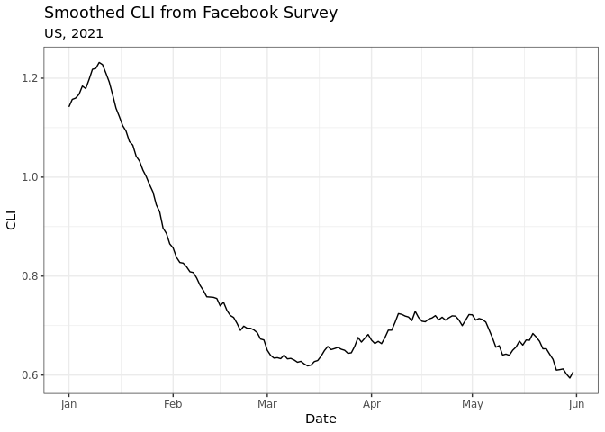

The Delphi Epidatr package is an R front-end for the Delphi Epidata API, which provides real-time access to epidemiological surveillance data for influenza, COVID-19, and other diseases for the USA at various geographical resolutions, both from official government sources such as the Center for Disease Control (CDC) and Google Trends and private partners such as Facebook and Change Healthcare. It is built and maintained by the Carnegie Mellon University Delphi research group.
This package is designed to streamline the downloading and usage of data from the Delphi Epidata API. It provides a simple R interface to the API, including functions for downloading data, parsing the results, and converting the data into a tidy format. The API stores a historical record of all data, including corrections and updates, which is particularly useful for accurately backtesting forecasting models. We also provide packages for downstream data processing (epiprocess) and modeling (epipredict).
Usage
You can find detailed docs here:
library(epidatr)
# Obtain the smoothed covid-like illness (CLI) signal from the
# Facebook survey as it was on April 10, 2021 for the US
epidata <- pub_covidcast(
source = "fb-survey",
signals = "smoothed_cli",
geo_type = "nation",
time_type = "day",
geo_values = "us",
time_values = epirange(20210101, 20210601),
as_of = "2021-06-01"
)
epidata
#> # A tibble: 151 × 15
#> geo_value signal source geo_type time_type time_value direction issue
#> <chr> <chr> <chr> <fct> <fct> <date> <dbl> <date>
#> 1 us smoothed… fb-su… nation day 2021-01-01 NA 2021-01-06
#> 2 us smoothed… fb-su… nation day 2021-01-02 NA 2021-01-07
#> 3 us smoothed… fb-su… nation day 2021-01-03 NA 2021-01-08
#> 4 us smoothed… fb-su… nation day 2021-01-04 NA 2021-01-09
#> 5 us smoothed… fb-su… nation day 2021-01-05 NA 2021-01-10
#> 6 us smoothed… fb-su… nation day 2021-01-06 NA 2021-01-29
#> 7 us smoothed… fb-su… nation day 2021-01-07 NA 2021-01-29
#> 8 us smoothed… fb-su… nation day 2021-01-08 NA 2021-01-29
#> 9 us smoothed… fb-su… nation day 2021-01-09 NA 2021-01-29
#> 10 us smoothed… fb-su… nation day 2021-01-10 NA 2021-01-29
#> # ℹ 141 more rows
#> # ℹ 7 more variables: lag <int>, missing_value <int>, missing_stderr <int>,
#> # missing_sample_size <int>, value <dbl>, stderr <dbl>, sample_size <dbl>
# Plot this data
library(ggplot2)
ggplot(epidata, aes(x = time_value, y = value)) +
geom_line() +
labs(
title = "Smoothed CLI from Facebook Survey",
subtitle = "US, 2021",
x = "Date",
y = "CLI"
)
Installation
You can install the stable version of this package from CRAN:
install.packages("epidatr")
pak::pkg_install("epidatr")
renv::install("epidatr")Or if you want the development version, install from GitHub:
# Install the dev version using `pak` or `remotes`
pak::pkg_install("cmu-delphi/epidatr")
remotes::install_github("cmu-delphi/epidatr")
renv::install("cmu-delphi/epidatr")API Keys
The Delphi API requires a (free) API key for full functionality. To generate your key, register for a pseudo-anonymous account here and see more discussion on the general API website. See the save_api_key() function documentation for details on how to use your API key.
Note that the private endpoints (i.e. those prefixed with pvt_) require a separate key that needs to be passed as an argument. These endpoints require specific data use agreements to access.
Get updates
You should consider subscribing to the API mailing list to be notified of package updates, new data sources, corrections, and other updates.
For users of the covidcast R package
The epidatr package is a complete rewrite of the covidcast package, with a focus on speed, reliability, and ease of use. The covidcast package is deprecated and will no longer be updated.